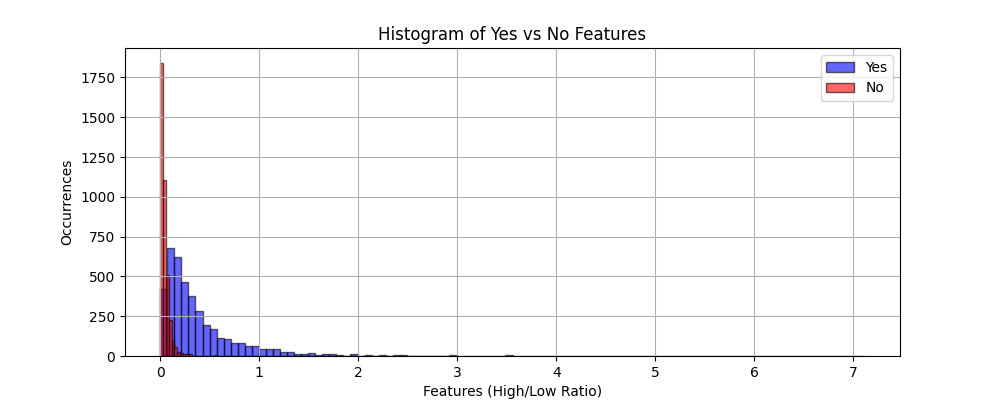
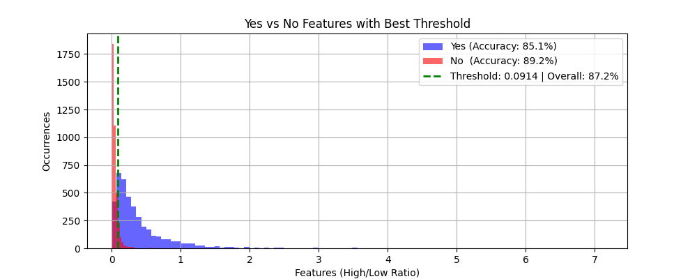

Speech Recognition
This project explores the idea of using only frequency characteristics of keywords to enable voice commands.
Overview
Expanding the methods by which people can interact with computers increases accessibility and user satisfaction. This project explores what can be achieved for simple "Yes" and "No" voice detection using only the frequency characteristics of those words. More importantly, I wanted to see if the frequencies of these words are distinct enough to allow for accurate detection.
Approach
I simply couldn't use my own voice to analyze the frequency because listening to my own voice makes me cringe and more importantly, that would be just one sample. For this project, I needed a large dataset of different ways people say "Yes" and "No," which fortunately Kaggle provides. I took this dataset and wanted to see how just two samples compared in terms of frequency and power. The intuition is that the word "Yes" has a hissing "S" sound, which I suspected would show up differently compared to the word "No". Figure 1 is a graphical comparison between one "Yes" and one "No" signal in power spectral density from the dataset.

Based on Figure 1, I noticed that the "No" signal has much less power at high frequencies compared to lower frequencies, while the "Yes" signal retains slightly more power in the higher frequency range. I computed this ratio for all signals in the dataset to determine if this pattern holds consistently. Figure 2 is a histogram of the computed ratios for all the "Yes" and "No" signals.

In Figure 2, the "No" signals in the dataset have a much lower high/low frequency power ratio while the "Yes" signals are more broadly distributed. There is clear overlap which will cause some inaccuracies, but the goal is to find the best single ratio value to determine whether a signal is "Yes" or "No". Figure 3 shows the success rate using the best possible chosen threshold.

Results
Ultimately, using solely frequency characteristics is an imperfect method for distinguishing these words. Figure 3 shows an 87% success rate, but that is with curated data. In a real-world scenario, background noise, accents, or signal quality issues could all decrease accuracy further.
Next Steps
There is room for improvement where a Mel spectrogram can be used for speech recognition instead of high/low ratios. Maybe pairing that with a deep learning model can help.